Md Rysul Kabir
Computer Science Ph.D. student
Indiana
University Bloomington
About Me
I work on LLM post-training and interpretability, reinforcement learning, and Bayesian modeling. I study how learning methods, memory, and internal representations shape model behavior.
My work spans training and evaluating language models, building agents with temporal memory, and fitting probabilistic models to cognitive and behavioral data.
Expertise 🔬
- LLM post-training: Supervised fine-tuning and reinforcement learning with verifiable rewards.
- Evaluation & interpretability: Model behavior, safety evaluation, and representation analysis.
- Reinforcement learning & memory: Time-scale invariant memory and temporal decision-making.
- Bayesian modeling & inference: Hierarchical models for cognitive and behavioral data.
Links 📫
- 🌐 Personal website — research projects and publications
- 📚 Google Scholar
Tech Stack 🛠️
LLM & deep learning
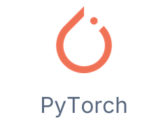 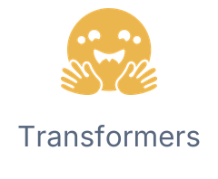 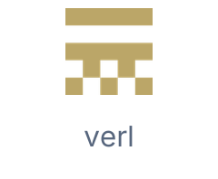 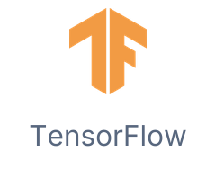
Bayesian modeling & data science
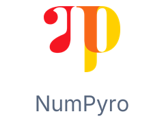 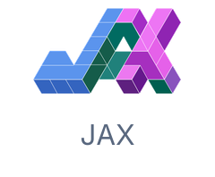 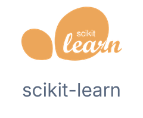 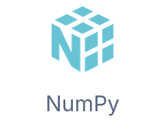 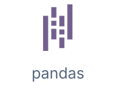 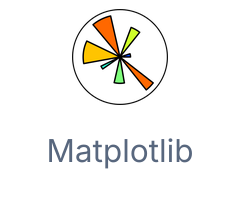 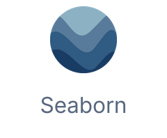
Compute & development
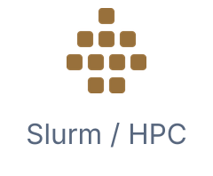 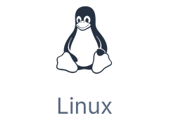 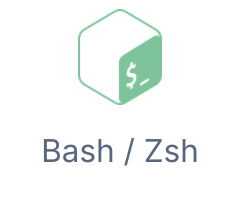 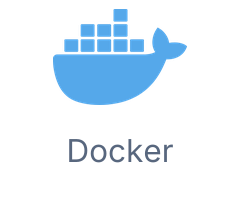 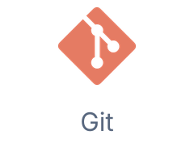
Languages
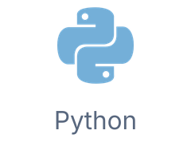 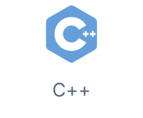 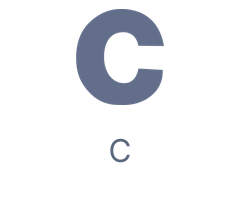 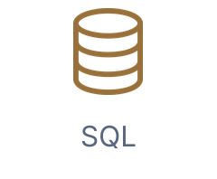 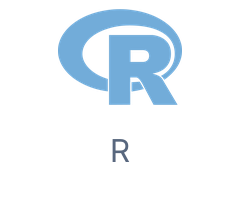 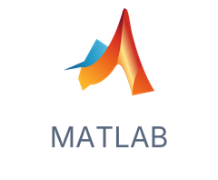